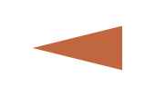
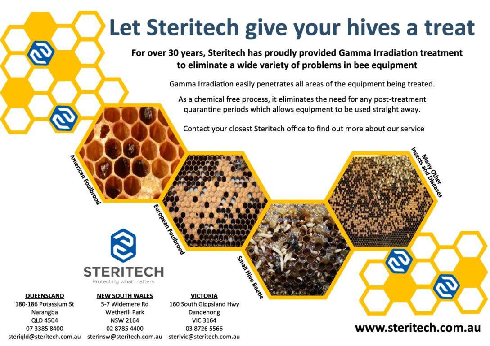

What's the Buzz
Two Bees in a Podcast
Thriving Women 2026 Conference
AgriFutures is a proud sponsor of the Thriving Women 2026 Conference, which brings together changemakers, decision-makers and rural women to challenge thinking, expand networks and reignite motivation. 10–11 August 2026 · Lansell Room, All Seasons Resort, Bendigo VIC.
27"We're beekeepers."July 2026 · Australian Bee Journal